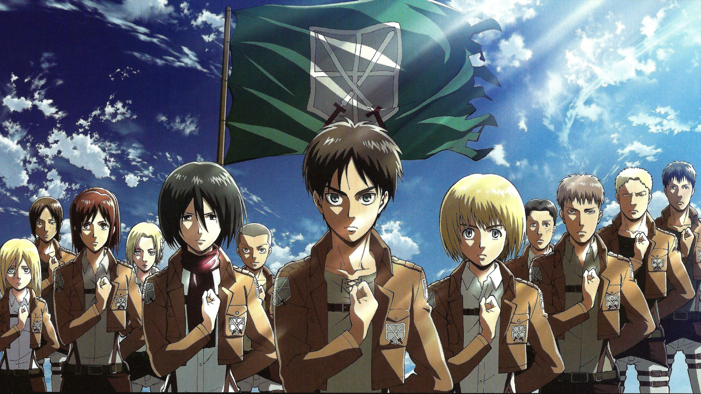
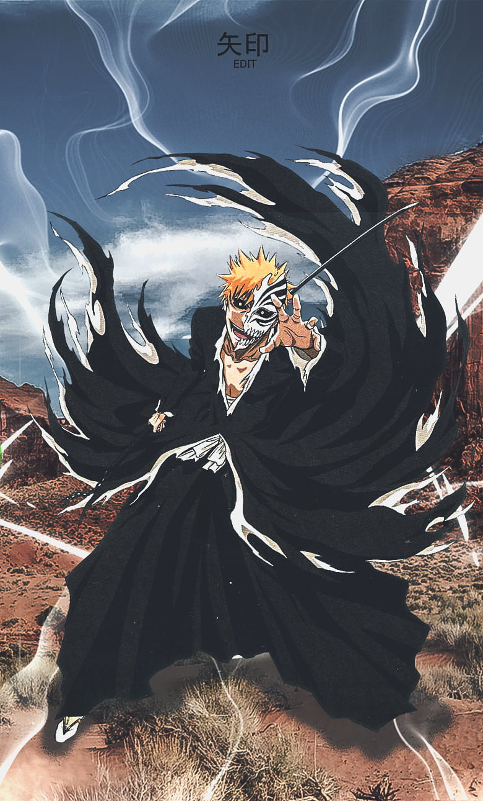
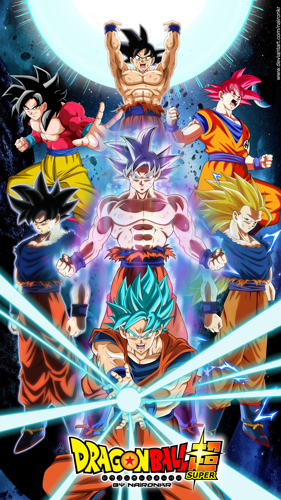
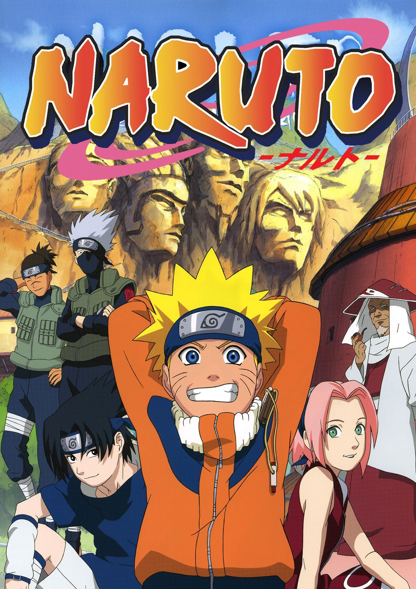

Set in a post-apocalyptic world where the remains of humanity live behind walls protecting
them
from giant humanoid Titans, Attack on Titan follows protagonist Eren Jaeger, along with
friends
Mikasa Ackerman and Armin Arlert. When a Colossal Titan breaches the wall of their hometown,
Titans destroy the city and eat Eren's mother. Vowing vengeance, Eren joins the elite Survey
Corps, a group of soldiers who fight against Titans. Attack on Titan chronicles Eren's
journey
with the Survey Corps as they fight against the Titans while investigating their origin and
history.

Other Trending Anime :

Bleach (stylized in all caps) is a Japanese anime television series based
on Tite Kubo's original
manga series of the same name. It was produced by Studio Pierrot and directed by Noriyuki Abe
A family is attacked by demons and only two members survive - Tanjiro and
his sister Nezuko, who is
turning into a demon slowly. Tanjiro sets out to become a demon slayer to avenge his family and
cure
his sister.

Dragon Ball (ドラゴンボール Doragon Bōru) is a Japanese manga by Akira Toriyama
serialized in Shueisha's
weekly manga anthology magazine, Weekly Shōnen Jump, from 1984 to 1995 and originally collected
into...

Naruto is a Japanese manga series written and illustrated by Masashi
Kishimoto. It tells the story
of Naruto Uzumaki, a young ninja who seeks recognition from his peers and dreams of becoming the
Hokage, the leader of his village.
"My motivation was to be the best... to be the greatest Saiyan alive, as I always have been... until
Kakarot came into the picture that is. Kakarot's success was like a demon in my head. How could he be a
Super Saiyan when I, the prince of all Saiyans, could not?"
-Warrior Prince Vegeta
Log In to Website for more content!
get 70% discount for premium account to get Exclusive Content.